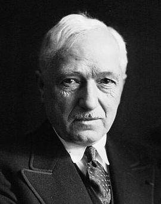

Первые правила
В XIX веке футбол в Англии приобрёл популярность, сравнимую с крикетом. В него играли в основном в колледжах. Но в некоторых колледжах правила разрешали ведение и передачу мяча руками, а в других напротив, запрещалось. Первая попытка создать единые правила была предпринята в 1846 году, когда встретились представители нескольких колледжей. Они установили первый свод правил. В 1857 году был основан первый специализированный футбольный клуб — «Шеффилд». В 1863 году после долгих переговоров был принят свод правил Футбольной Ассоциации Англии. Также были приняты размеры поля и ворот. А в 1871 году был основан Кубок Англии — старейший футбольный турнир в мире. В 1891 году было принято правило о пенальти. Но сначала пенальти билось не с точки, а с линии, которая также, как и сейчас, находилась на расстоянии 11 метров от ворот.
Легализация профессионализма и распространение по планете
 В 1880-х годах футбол стал популярен в обществе. Число клубов в Футбольнойа ссоциации превышало 100. Тогда же стали ходить слухи о том, что некоторые клубы платят игрокам зарплату, а по первоначальному замыслу ассоциации футбол — исключительноюбительский вид спорта. Поэтому в 1882 году в правила добавили следующий пункт:
Всякий игрок клуба, получающий от клуба вознаграждение в какой-бы то ни было форме или денежное возмещение, превышающее его личные расходы или средства, в связи с выходом на ту или иную игру, автоматически отстраняется в соревнованиях на Кубок, в любых соревнованиях под эгидой ФА и в международных турнирах. Клуб, нанявший такого игрока, автоматически исключается из Ассоциации.
В начале 1884 года клуб «Аптон Парк» обвинил «Престон Норт Энд» в том, что футболистам этого клуба платят зарплату. Президент «Престона» Уильям Саддел также это признал. Клуб был исключён из ФА. А в 1885 году Футбольная ассоциация всё-таки разрешила платить футболистам зарплату. Это привело к созданию первой в мире регулярной Футбольной лиги. Чемпионом этого турнира стал «Престон Норт Энд». 30 ноября 1872 года был проведён первый в истории международный матч. Он прошёл между сборными Англии и Шотландии. В 1904 году в Париже была основана ФИФА, управляющая организация в футболе. В неё вошли: Бельгия, Дания, Франция, Нидерланды, Испания (как ФК «Мадрид»), Швеция и Швейцария.В 1901 году в Монтевидео состоялся первый в истории матч с участием сборных, не представлявших Британские острова — хозяева, сборная Уругвая в упорной борьбе уступили Аргентине со счётом 2:3
Начало международных соревнований
.jpg) После избрания Жюля Риме президентом ФИФА в 1921 году было ратифицировано предложение считать последующие Олимпийские футбольные турниры «чемпионатами мира по футболу среди любителей». Эти турниры — 1924 и 1928 годов — выиграла сборная Уругвая. Благодаря этим успехам у Ассоциации футбола Уругвая не было конкурентов в борьбе за организацию первого в истории Кубка мира ФИФА (более известного в русском языке просто как чемпионат мира по футболу), который прошёл в 1930 году. Уругвайцы стали победителем домашнего первенства, трёхкратными чемпионами мира по футболу и первыми обладателями Кубка мира ФИФА. Это стало началом новой эры в истории футбола. До 1970 года этот трофей носил имя Жюля Риме, также был известен как «Кубок богини Нике», но после третьей победы сборной Бразилии на чемпионате мира был отдан ей на вечное хранение. Вместо него стал разыгрываться современный Кубок мира.
После избрания Жюля Риме президентом ФИФА в 1921 году было ратифицировано предложение считать последующие Олимпийские футбольные турниры «чемпионатами мира по футболу среди любителей». Эти турниры — 1924 и 1928 годов — выиграла сборная Уругвая. Благодаря этим успехам у Ассоциации футбола Уругвая не было конкурентов в борьбе за организацию первого в истории Кубка мира ФИФА (более известного в русском языке просто как чемпионат мира по футболу), который прошёл в 1930 году. Уругвайцы стали победителем домашнего первенства, трёхкратными чемпионами мира по футболу и первыми обладателями Кубка мира ФИФА. Это стало началом новой эры в истории футбола. До 1970 года этот трофей носил имя Жюля Риме, также был известен как «Кубок богини Нике», но после третьей победы сборной Бразилии на чемпионате мира был отдан ей на вечное хранение. Вместо него стал разыгрываться современный Кубок мира.